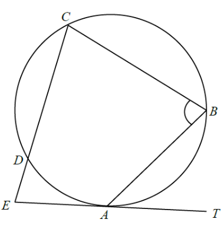

平面幾何 · 圓的切線

$$\angle ACB=\angle BAT=24^{\circ}$$
$AB=CD$，故
$$\angle CAD=\angle ACB=24^{\circ}$$
設 $\angle DAE=x$。由切線與弦 $AD$ 的夾角：$\angle ACD=x$（交錯弓形角）。
在 $\triangle ACE$：
$$(24^{\circ}+x)+x+72^{\circ}=180^{\circ}\;\Rightarrow\;2x=84^{\circ}\;\Rightarrow\;x=42^{\circ}$$
$$\angle ADC=180^{\circ}-24^{\circ}-42^{\circ}=114^{\circ}$$
$$\angle ABC=180^{\circ}-114^{\circ}=66^{\circ}$$